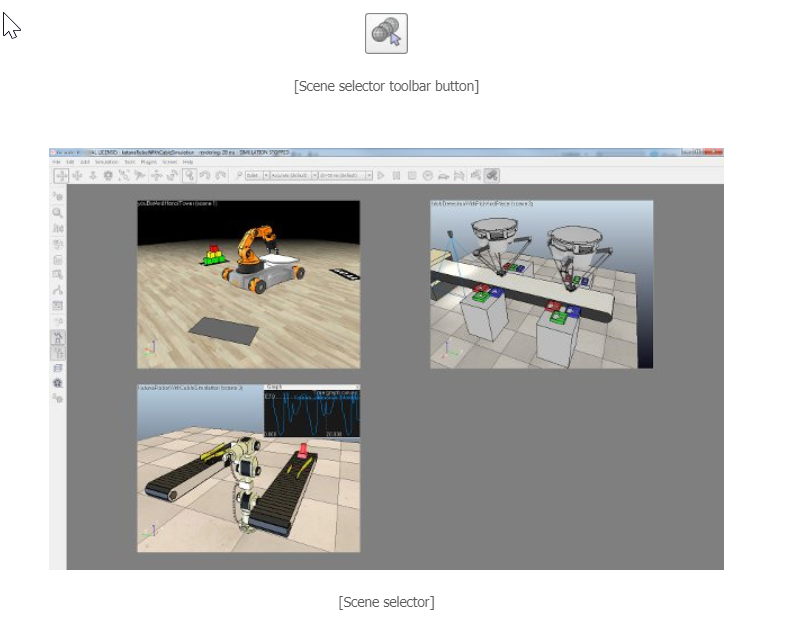

User interface(用戶界面) <<
Previous Next >> Simulation(模擬)
Scenes and models(場景和模型)
Scenes and models are CoppeliaSim's main simulation elements. A model is a sub-element of a scene, clearly marked as model. A scene may contain any number of models. Following figure illustrates the scene-model relationship:
場景和模型是CoppeliaSim的主要模擬元素。 模型是場景的子元素，明確標記為模型。 場景可以包含任何數量的模型。 下圖說明了場景模型關係：
Scenes(場景)
Compared to models, a scene can contain exactly the same type of elements, but additionally also includes following elements, specific to scenes:
與模型相比，場景可以包含完全相同類型的元素，但另外還包括以下特定於場景的元素：
A scene or scene image content can be seen through a viewable object associated with a view, itself contained in a page. When creating a new scene ([Menu bar --> File --> New Scene]), the default scene will contain following elements:
可以通過與視圖相關聯的可視對象（本身包含在頁面中）來查看場景或場景圖像內容。創建新場景時（[菜單欄->文件->新場景]），默認場景將包含以下元素：
- Several camera objects: cameras allow to see the scene if they are associated with a view.
- Several light objects: without a light the scene would be hardly visible. The light is used to illuminate the scene.
- Several views: a view is associated with a camera and displays what the camera sees. Views are contained in pages.
- Several pages: a page contains one or several views.
- The environment: the environment is composed by properties as ambient light, fog, background color, etc.
- The floor: the floor is made-up by objects grouped in a model.
The default main script: the default main script should allow running minimal simulations, without the need of child scripts. A child script copied into the scene at a later stage will then also be automatically executed (called by the main script) if it is associated with a scene object.
- 幾個攝影機對象：如果攝影機與視圖關聯，則可以查看場景。
- 幾個燈光對象：沒有燈光，幾乎看不到場景。燈光用於照亮場景。
- 幾個視圖：一個視圖與相機關聯，並顯示相機看到的內容。視圖包含在頁面中。
- 多個頁面：一個頁麵包含一個或多個視圖。
- 環境：環境由環境光，霧，背景色等屬性組成。
- 地板：地板是由模型中分組的對象組成的。
- 默認主腳本：默認主腳本應允許運行最少的模擬，而無需子腳本。如果子腳本與場景對象相關聯，則在稍後階段複製到場景中的子腳本也將自動執行（由主腳本調用）。
Scenes can be opened (loaded) with [Menu bar --> File --> Open Scene...] and saved with [Menu bar --> File --> Save Scene] or [Menu Bar --> File --> Save Scene as...]. Scene files ("*.ttt"-files) also support drag and drop operations between the explorer window and the application window. Scene files can also be double-clicked, in which case they will launch the CoppeliaSim application and be opened.
可以使用[菜單欄->文件->打開場景...]打開（加載）場景，並使用[菜單欄->文件->保存場景]或[菜單欄->文件- >將場景另存為...]。 場景文件（“ * .ttt”文件）還支持資源管理器窗口和應用程序窗口之間的拖放操作。 也可以雙擊場景文件，在這種情況下，它們將啟動CoppeliaSim應用程序並打開。
Switching between opened scene can be achieved with a single click in the upper part of the scene hierarchy (all opened scenes are grouped at the top of the scene hierarchy), or by using the scene selector via its related toolbar button:
只需在場景階層結構的上部單擊即可切換打開的場景（所有打開的場景都在場景階層結構的頂部分組），或者通過與其相關的工具欄按鈕使用場景選擇器來實現：

model(模型)
User interface(用戶界面) <<
Previous Next >> Simulation(模擬)